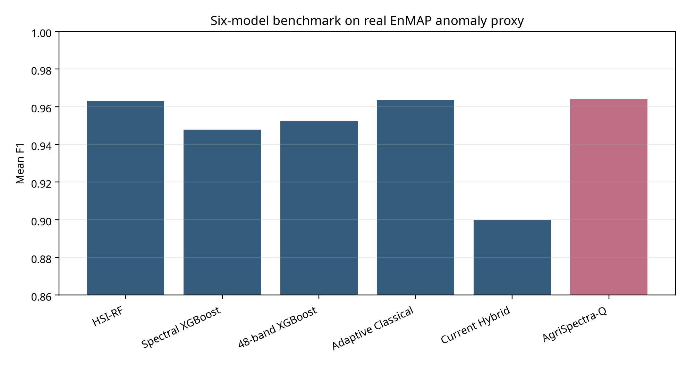
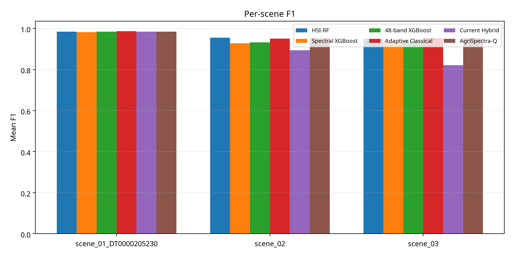
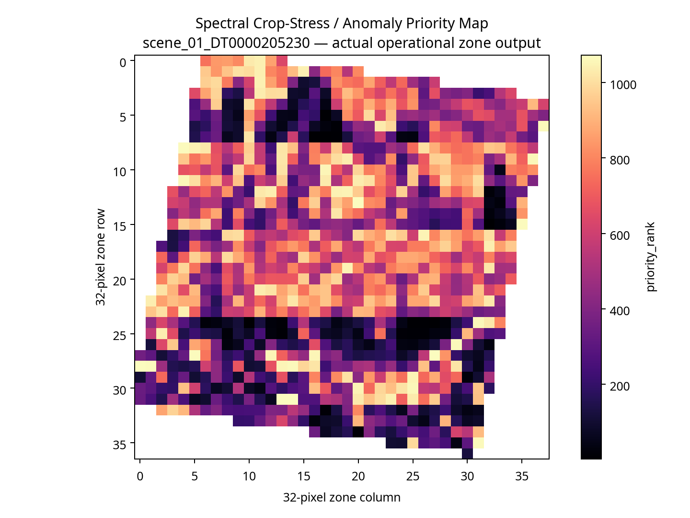

Evidence status: This prototype uses real EnMAP outputs and a spectral crop-stress/anomaly proxy. It is not a disease-diagnosis dashboard and does not claim field validation.
Benchmark overview
Decision logic
HIGH PRIORITY
Inspect this zone first.
Inspect this zone first.
MONITOR
Continue EO monitoring and reassess.
Continue EO monitoring and reassess.
ABSTAIN / HUMAN REVIEW
Confidence is insufficient for automated action.
Confidence is insufficient for automated action.
Top operational zones
| Rank | Zone | Risk | Confidence | Action |
|---|
Actual experiment figures



Operational zone records come from the existing real-output zone CSVs. Spatial maps are zone-grid priority maps, not field-confirmed disease maps. Temporal persistence is omitted because no validated temporal series is available.